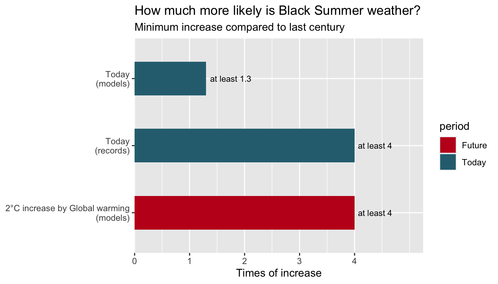

| Factor | Study.Found | Exlplain |
|---|---|---|
| Extreme heat | At least 2 times as likely | Extreme heat in 2019-20 will be 1–2°C lower if happend in around 1900 |
| Drought | No clear link to climate change found | Can not reject, model did not detect out their relationship because natural climate mode in 2019 |
| Fire weather index (FWI) | At least 1.3 times as likely | Combine the extreme heat, drought and wind, dangerous weather like Black Summer is more likely now |
The sky turned orange over southeastern Australia in the summer of 2019-20. The “Black Summer” bush fires burned more than 19 million hectares of land, killed 34 people and destroyed around 5900 homes and other buildings. Smoke has blanketed cities like Sydney and Canberra, nearly 80% Aussies said their living has been affected. Perhaps you are one of them. So, is it only a disaster season or caused by human activity? A major international research has confirmed that comparing to 1900s, the climate change has increased the occurrence of dangerous fire weather at least 30%, and probably much more (Oldenborgh et al. 2021).
What happened? And what scientists asked?
In that summer, many people who watching this news asked this question, but its harder to answer than it sounds. A bushfire needs ingredients of hot weather, strong winds, dry vegetation and source of ignition like lightning or human. Climate change will not light fires,and there has not fire season can be blamed on single one factor. Thus scientists asked another question: how much more the climate change increased the probability of hot, dry and windy weather which make the fire spread so far? You can even image that every road could happening car accident, but wet road will strongly increase the probability.
A team of international scientists has compared the likelihood of weather in “Black Summer” to that in last century. They used two evidences: the Australian weather records in recent ten years and computer model of the climate, which can reproduce the weather condition form the beginning of 20th century. These evidences has let scientists counting out the frequency of extreme weather in different periods. The team has divide the research in three aspects: Drought, Extreme heat and overall fire weather.
Explain the Evidences
These climate records were from ERA5, it is used to combining the previous climate observation with climate model since 1979. Scientists used “Fire weather index”(FWI) to measure the level of danger weather, it could be view as a dangerous score which combine the temperature, humidity, wind and rainfall into one value, higher FWI means bushfire is easier to start and spread.
These three factors reflect different situations (Table 1). Extreme heat shows a significant relationship, that human-caused climate change has increased at least 200% than extreme heat in December of 2019. The climate record shows if the extreme heat happen around 1900, the temperature of same heat wave will have 1 to 2 °C lower. Drought is different because the team did not found a clear relationship between extreme heat, bu t it does not mean there has no affect on drought by climate change, but did not detected by this research. The drought in 2019 was mainly drove by two climate modes: the Indian Ocean Dipole and the Southern Annular Mode, they separately explained the one of third of drought from July to December. While all factors are considered in FWI, the result is obvious: extreme weather like “Black Summer” have a 30% higher than around 1900 which mainly due to rise in extreme heat.
According to climate records, the probability of fire weather like “Black Summer” is now at least four times higher than last century.(Figure 1) The model also shown that if global temperature increase 2°C above pre-industrial level, the disaster climate will be at least four times than the beginning of 20th century, this kind of risk will keep increasing with global warming.

These data has an important limitation, the climate model tend to underestimate the increasing rate of extreme heat, thus the actual increased risk will larger than expectation. Furthermore, the climate data only cover the time after 1979, but there was a extreme drought in this period and may make the “four times” too high. As these models are also used for prediction, lower bonds should be paid more attention rather than those attractive.
Not just a bad summer
Back to our question: Did climate change lead to Black Summer? Climate change not light fire. The evidence shows human-caused climate change increased the probability of dangerous fire weather mainly because it make extreme heat more frequent. The likelihood of extreme heat week in December 2019 has increase at least twice larger than that in 1900s and fire weather like 2019-20 has increased at least 30%, and this risk is still increasing.
What does this mean for you? If you living in Australia, the heat, drought and windy weather which caused Black Summer is not as rare as a century ago, but more common due to global warming. Here are few steps of self-prevention: Check the danger rating on hot days, cleaning dry leaves and plants near your house on time and set a bushfire plan. No one can stop every fire, but better understanding of risk can help us ready for next Black Summer.
References
Oldenborgh, Geert Jan van, Folmer Krikken, Sophie Lewis, Nicholas J. Leach, Flavio Lehner, Kate R. Saunders, Michiel van Weele, et al. 2021. “Attribution of the Australian Bushfire Risk to Anthropogenic Climate Change.” Natural Hazards and Earth System Sciences 21: 941–60. https://doi.org/10.5194/nhess-21-941-2021.